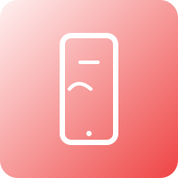

1. De kern van 'nee' — wat het echt betekent
Het woord "nee" is compact maar complex. Op het eerste gezicht is het een negatie; in de praktijk is het een grens, een signaal en een keuzeverklaring. Een heldere 'nee' communiceert twee dingen tegelijkertijd: (a) een concrete beperking (tijd, veiligheid, capaciteit), en (b) een prioriteit — wat wél belangrijk is voor jou. Wanneer je dit onderscheid bewust maakt, verandert 'nee' van een defensieve reflex in een constructief instrument.
Waarom sommige mensen moeite hebben met 'nee': vaak is het minder een taalprobleem en meer een mentale gewoonte. Schuldig voelen, de wens om aardig gevonden te worden, of angst voor de gevolgen zorgt dat 'nee' verzacht of vermeden wordt. De sleutel is niet om harde, koude antwoorden te forceren; de sleutel is congruentie: je woorden moeten overeenkomen met je handelen en je non-verbale signaal.
Direct toepasbaar
- Formuleer korte, consistente scripts: houd ze onder de twintig woorden.
- Gebruik één van drie stadia: kort ("Nee."), kort + reden ("Nee, ik heb het te druk."), of kort + alternatief ("Nee, maar ik kan op vrijdag helpen").
- Oefen je intonatie: kalm, laag volume, neutraal tempo — dit vermindert debat en redenering.
Reflectieoefening
Neem elke avond 5 minuten: noteer één situatie waarin je 'nee' zei en één waar je dat niet deed. Vraag jezelf: waarom reageerde ik zo? Wat zou ik de volgende keer anders willen? Dit kleine ritueel werkt als 'data' voor verbetering.
2. 'Nee' op het werk — professioneel, helder en overtuigend
Werkcontexten vragen vaak om nuance: je wilt professioneel blijven maar ook je grenzen respecteren. De meest effectieve formule in professionele settings is 'context + nee + oplossing/alternatief'. Deze structuur voorkomt dat je 'nee' als simpelweg weigering wordt ervaren en positioneert het als een verantwoordelijke, oplossingsgerichte keuze.
Praktische sjablonen
Gebruik e-mail- en gespreksgereedschap om je 'nee' duidelijk te maken zonder emotie of onnodige uitleg. Enkele voorbeelden:
E-mail: "Dank voor de vraag. Mijn huidige prioriteiten (A en B) laten dit niet toe; ik kan dit volgende week oppakken of X kan ondersteunen."
Gesprek met baas: "Ik zie de urgentie. Op dit moment werk ik aan X (deadline Y). Als we dit willen doen, moeten we prioriteiten herverdelen of extra capaciteit inzetten."
Rationele argumenten
Managers en stakeholders reageren vaak beter op meetbare, objectieve redenen: capaciteitsinschattingen, geschatte uren, impact op deadlines. Maak die zichtbaar: gebruik een korte bulletpoint-lijst over workload als context. Dit is geen excuus; het is informatie die besluitvorming verbetert.
Wanneer herprioriteren?
Als iets vaker vergeefs wordt afgewezen, vraag om een gezamenlijke herprioritering: "Welke items moeten wij verplaatsen om dit mogelijk te maken?" Daarmee verschuif je het probleem naar besluitvormers zonder jezelf te isoleren.
3. Grenzen in persoonlijke relaties — liefde, vriendschap en familie
In intieme relaties kan een 'nee' emotioneel geladen zijn. Mensen die dicht bij je staan kunnen 'nee' persoonlijk opvatten. Daarom helpt het om je boodschap te verbinden met een 'ik-boodschap' en een korte verklaring van zorg. Bijvoorbeeld: "Ik hou van je, maar dit kost me energie, dus ik kan niet meegaan." Dit respecteert zowel jouw grens als de relatie.
Concrete zinnen per situatie
- Familiediner: "Ik kan er niet zijn, maar stuur foto's daarna."
- Vriendschap: "Ik wil je steunen, maar dit is emotioneel te intens voor mij."
- Romantische vraag: "Ik voel me daar niet comfortabel mee en zeg nee."
Herhaling & consistentie
Een grens is alleen effectief als hij consistent wordt gehandhaafd. Als je de ene dag nee zegt en de volgende dag toegeeft, bedoelt je signaal minder. Denk aan grenzen als wetten: handhaaf de consequenties die je vooraf hebt afgesproken.
Samen grenzen uitwerken
Bij terugkerende spanningen helpt het om samen regels op te stellen: vaste gezinsavonden, geen telefoon tijdens maaltijden, of een afgesproken 'time-out' procedure in discussies. Dergelijke regels maken verwachtingen expliciet en verminderen onnodige escalaties.
4. Zelfzorg en preventie van burn-out — 'nee' als medicijn
Zelfzorg is vaak onzichtbaar tot het te laat is. 'Nee' is een preventieve maatregel tegen chronische stress. Zie het als een medicijn: het voorkomt dat je energiereserves uitgeput raken. Praktische stappen om zelfzorg systematisch in te bouwen:
Werkbare routines
- Plan elke week minimaal twee onbeschikbare blokken (min. 90 minuten) in je agenda.
- Houd een 'energie-logboek' bij: noteer dagelijkse energieniveaus en link ze aan activiteiten.
- Leer 'nee' zeggen tegen extra taken in lage-energie-periodes — dit voorkomt achterstand en rijzende stress.
Herstel en prioritering
Prioriteer slaap, voeding en beweging. Als die basis niet klopt, wordt 'nee' kwetsbaarder. Plan herstelblokken actief: wandelingen, korte meditatie sessions, of witte-ruimtes zonder schermen.
Vroege signalen herkennen
Herken vermoeidheid, cynisme, verminderd initiatief en concentratieverlies als vroegtijdige waarschuwingssignalen. Wanneer die optreden, schaal direct terug en pas grenzen aan.
5. Culturele en sociale nuances van 'nee'
Niet iedereen heeft dezelfde voorkeur om direct te worden afgewezen. In veel culturen is 'nee' indirect of wordt het verzacht met beleefdheidsfrases. Dit betekent niet dat grenzen irrelevant zijn — het betekent dat je taal moet aanpassen. Observatie is de beste eerste stap: let op non-verbale hints zoals stiltes, gezichtsuitdrukkingen en het aanbieden van alternatieven.
Aanpak in interculturele context
- Neem extra tijd; vraag verdedigend: "Wil je hier later op terugkomen?"
- Als helderheid cruciaal is, maak expliciete afspraken: "Mag ik over 48 uur bevestigen?"
- Leer lokale conventies: soms is het gepast om indirect te weigeren en daarna een schriftelijke bevestiging te sturen.
Conclusie: culturele nuance is geen excuus voor onduidelijkheid; het vereist juist vaardigheid en sensitiviteit.

6. Digitale grenzen — sociale media, e-mail en bereikbaarheid
Online interactie heeft eigen regels. Digitale grenzen beschermen je aandacht en mentale ruimte. Maak beleid voor jezelf: beantwoord e-mail alleen op vaste momenten, gebruik filters en automatische antwoorden, en bepaal welke onderwerpen je in DM's wel of niet beantwoordt.
Voorbeelden van korte regels
- Werkmail: alleen binnen kantoortijden beantwoorden.
- Social: geen discussiepolitiek in feed; vaste tijd voor scrollen max 20 minuten/dag.
- DM's: pin een korte automatische reactie: "Dank, ik lees dit later — bij urgente zaken: contact via e-mail."
Automatisering: gebruik tools voor filters, labels en autoresponders. Dit maakt je grenzen gemakkelijk, reproduceerbaar en minder emotioneel beladen.
7. Juridische en professionele bescherming
Soms is 'nee' niet alleen persoonlijk — het is juridisch en professioneel relevant. Denk aan medische toestemmingen, contractuele aanbiedingen of verzoeken die jouw toestemming impliceren. In zulke gevallen: documenteer. Stuur bevestigingsmails, houd tijdstempels en bewaar correspondentie.
Voorbeelden van documentatie
- E-mail: "Ik kan niet instemmen met dit voorstel op dit moment. Bevestig aub dat dit is ontvangen."
- HR-communicatie: stuur een korte notitie met context en vraag om bevestiging van ontvangst.
Als iets risico of aansprakelijkheid inhoudt, raadpleeg juridische of HR-advies. 'Nee' op zich beschermt niet altijd; correcte documentatie en proces wél.

8. Oefeningen, rollenspellen en trainingsschema's
Vaak zegt men "Ik weet dat ik nee moet zeggen", maar in de praktijk hapert het. Training lost dit op. Een eenvoudig 4‑week schema kan snelle resultaten geven:
- Week 1 — Bewustzijn: houd een weeklog bij met momenten waarop je ja zei en waarom.
- Week 2 — Scripts: formuleer en oefen 30 korte zinnen voor veelvoorkomende situaties.
- Week 3 — Rollenspellen: doe 5 rollenspellen met feedback van een vriend of coach.
- Week 4 — Integratie: reflecteer en stel doelen voor langere termijnaanpassingen.
Afsluitend: neem op tijdens oefening en luister terug. Vaak klinkt een geoefende 'nee' in opnamen veel natuurlijker dan je verwacht.
9. Communicatietechnieken die 'nee' ondersteunen
De manier waarop je 'nee' verpakt bepaalt de uitkomst. Gebruik technieken zoals de 'broken record' (herhaal je korte nee als iemand aandringt), 'de escalatiepoort' (bereid alternatieven en timeslots voor), en 'ik-boodschappen' om emotionele defensie te verminderen.
Voorbeeldpatronen
- Broken record: "Nee, ik kan dat niet. Nee, ik kan dat niet." (herhaal kalm)
- Time-limited nee: "Ik kan dit niet nu; ik stel voor we het volgende week evalueren."
- De-escaleer: combineer empathie en grens: "Ik begrijp dat dit belangrijk is, maar ik kan het niet doen."
Non-verbaal: hou houding open, handen neutraal, oogcontact kort maar niet intimiderend. Stem varieert weinig; te veel emotie wekt debat uit.

10. Integratie: systemen en rituelen om 'nee' vol te houden
Grenzen blijven alleen bestaan als je systemen bouwt die ze ondersteunen. Gebruik je agenda als bondgenoot: blokkeer niet-onderhandelbare tijd, gebruik labels in je mailbox en stel automatiseringen in om verzoeken te kanaliseren.
Praktische checklists
- Dagelijks: 10 minuten reflectie over je grenzen en energie.
- Wekelijks: herzie je agenda en verplaats taken die niet langer passen.
- Maandelijks: beoordeel terugkerende verzoeken en heronderhandel structurele taken.
Tot slot: wees mild. Grenzen oefenen is een vaardigheid. Soms falen we, soms slagen we — het proces zelf is de winst. Documenteer je successen en leer van momenten van terugval. Zo wordt 'nee' een bron van autonomie en welzijn, geen bron van schaamte.